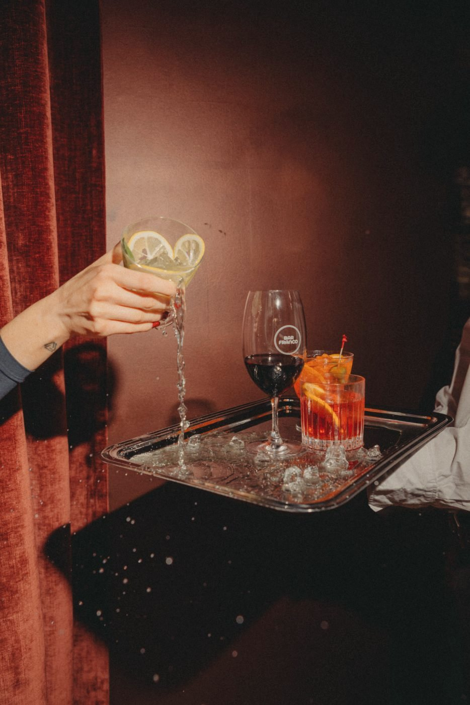

(upstairs) · The Crossing · 166 Cashel St · Ōtautahi
The Negroni & Spritz Bar.
On level 1, the bar keeps the tempo.
01 · The house ritual
The house Negroni
Negroni
- Camparione part
- Rosso Vermouthone part
- Bulldog Ginone part
- Stirred over iceorange peel
Stirred to order. The best Negroni in Christchurch (we’d argue).
- Classic Negroni24

02 · What’s pouring
A drink for every mood